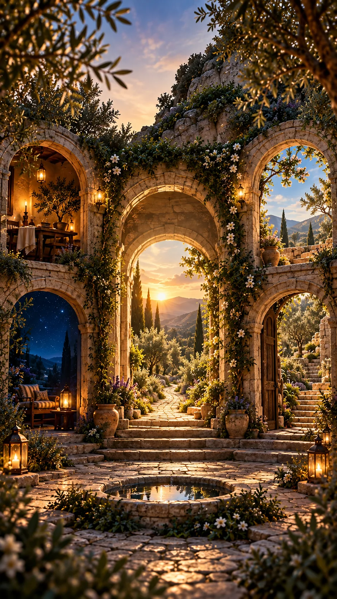

01ENCUENTROא
ENCUENTRO 1 · BERESHIT · RISHON
תֹהוּ · Tohu vaVohu
¿Qué haces cuando todo es caos?
Elige el espejo que más se parece a tu estado de hoy. No hay puntaje ni respuesta correcta.

Entra por lo que hoy resuene contigo.
Alimento diario para el alma
Una pregunta. Una raíz. Una práctica en el mundo.
Los cuatro caminos no son un test. Son espejos para reconocer dónde estás hoy.
Elige el espejo que más se parece a tu estado de hoy. No hay puntaje ni respuesta correcta.
ADAM–ADAMÁ permanece como Estudio completo de profundidad contextual. Esta conexión diaria sólo abre una ventana hacia él.
Profundizar es una invitación, no un requisito.
No es una tarea para acumular. La práctica existe para que algo del Estudio toque vida real.
La lógica RC2 se conservará intacta. Esta pantalla se trabajará después de cerrar Home + Camino.
La lógica RC2 se conservará intacta. Esta pantalla se trabajará después de cerrar Home + Camino.
Una sola puerta. Futuras colecciones: Meditación · Parashá · Hitbodedut.
Memoria personal sin puntuación, niveles ni rachas.